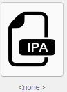
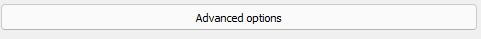
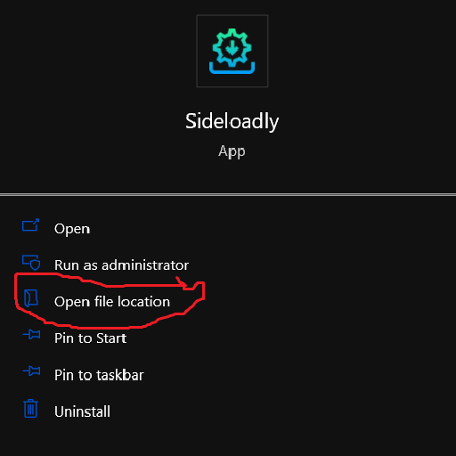
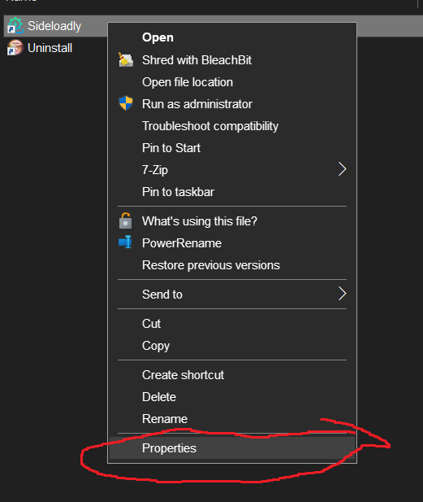
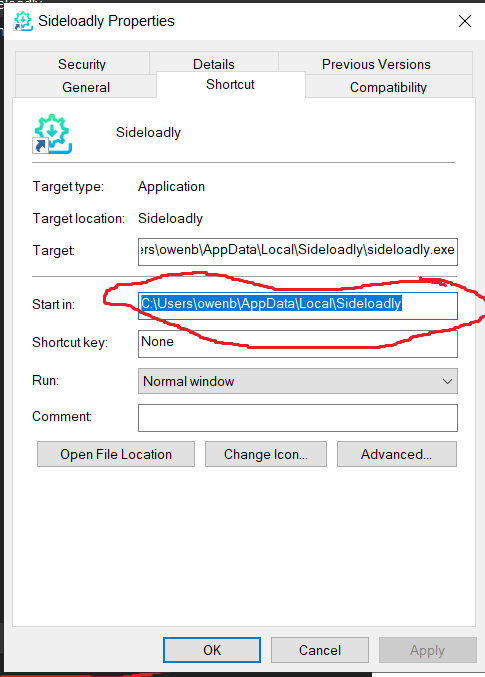
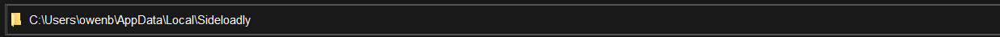
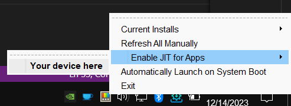

IOS sideloading:
If your IOS version is greater than 16.6.1, follow this guide. (If you have an older phone with a cpu from A8-A11 you can still use troll store.)
If your version is lower than that, good! You can use troll store in the guide I that will make soon. (You can still use this guide, but troll-store is better.)
Now we are assuming that your phone is on too high of a version to install troll store. *This demonstration uses Dolphin IOS as an example side-loadable app.
If you don't have an apple developer account, make one here:
https://developer.apple.com/
You also need to have itunes installed on your computer. (Don't use the one from the microsoft store, use the one from apple's website.)
- First, install sideloadly on your computer with this link:
Sideloadly Website
Or, use this direct download to the windows 64-bit executable:
Direct download
- Get your .ipa file. In this example, this is Dolphin IOS at this link:
Dolphin IOS
- Open sideloadly, plug in your phone to your computer, and click this icon:

- Then, in the file browser pick your .ipa file.
- Click advanced options.

- Change anisette to remote.
- Click start and sign into your developer account.
- Wait for sideloadly to install the file.
- When dolphin IOS is installed, open the app and add your game files. When you try to lauch the game, it will ask you for JIT.
- On your computer, open search and search for sideloadly, then click "Open file location".

- Then, right click sideloadly and click "Properties".

- Copy the path of the start in location.

- Paste that into the address bar and hit enter.

- Run sideloadlydaemon.exe (Double click).
- Enable JIT from the task bar/notification bar.

- Now JIT will enabled untill you close the app (Keep it open in the app switcher).
IOS sideloading